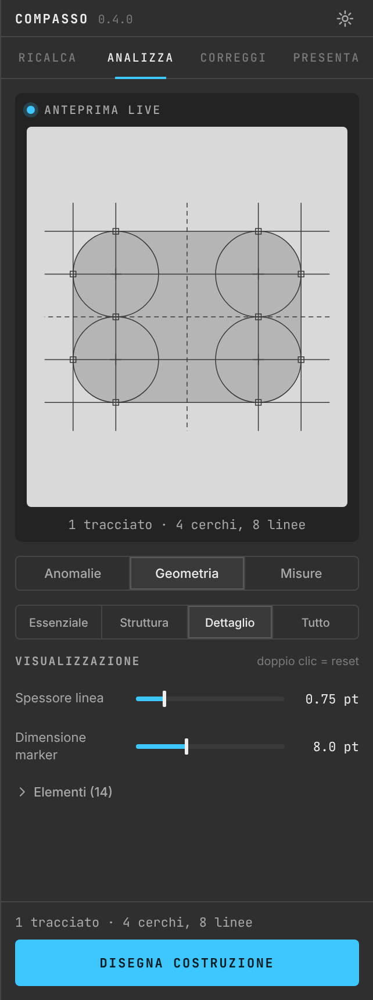
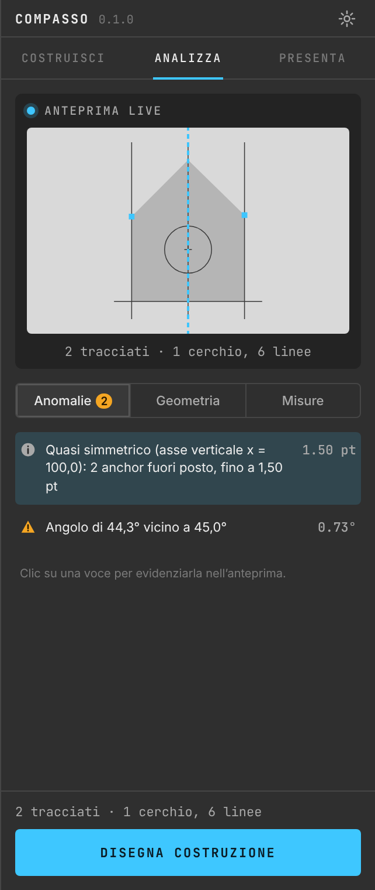

Cosa fa
Tre schede, tutto quello che serve.

Geometria
La costruzione, non una griglia preimpostata
Compasso legge le curve vere del logo: riconosce gli archi anche spezzati in più tratti, unisce i cerchi uguali, trova tangenze, centri comuni e allineamenti. Scegli quanta costruzione vedere e includi o escludi ogni elemento. L'anteprima è live; il documento cambia solo quando premi Disegna.

Anomalie
Gli errori invisibili, con il numero esatto
Una curva circolare al 99%, due raggi diversi dell'1%, un anchor fuori riga di 0,3 pt, una simmetria quasi perfetta. Compasso li elenca per importanza e li evidenzia con un clic.

Misure
Unità x e area di rispetto, pronte per il brand book
Lo spessore ricorrente dell'asta diventa l'unità x; da lì l'area di rispetto in multipli di x, i raggi e i rapporti notevoli (aureo, √2, 2, 1,5). Un clic e le misure sono negli appunti.